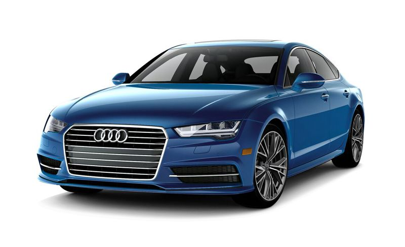

-
Fast
The configurable speed limiter limits driving speed to a value set by the driver within the speed range of 30 to 250 km/h (18.6 to 155.3 mph).
Read More -
Safe
Safety has a long tradition at Audi: 75 years ago, DKW engineers rolled a subcompact F7 down a hill in the interest of safety and caused a controlled rollover. Since this first crash test at DKW, one of the four brands from which Audi was created, Audi has regularly claimed the spotlight with new safety features.
Read More -
Economic
As part of Audi's attempt to promote its Diesel technology in 2009, the company began Audi Mileage Marathon. The driving tour featured a fleet of 23 Audi TDI vehicles from 4 models (Audi Q7 3.0 TDI, Audi Q5 3.0 TDI, Audi A4 3.0 TDI, Audi A3 Sportback 2.0 TDI with S tronic transmission) travelling across the American continent from New York to Los Angeles, passing major cities like Chicago, Dallas and Las Vegas during the 13 daily stages, as well as natural wonders including the Rocky Mountains, Death Valley and the Grand Canyon.
Read More
AUDI's one of the best model
R8
Night view
Speedometer
It makes the driver to catch speed easily
-
Audi A4
The Audi A4 is perhaps the most well-rounded car in the entry-luxury sedan segment, thanks to its compelling combination of athletic performance, a comfortable and well-built interior, high-tech features, and handsome exterior design. It excels in almost all areas of our testing, out accelerates its rivals while sipping fuel, and cocoons its occupants in a quiet, spacious, and well-appointed cabin. The ride quality admirably walks the thin line between sport and comfort, providing valiant cornering confidence when pushed hard and a relaxed experience when cruising long distances. Throw in a smattering of cutting-edge technology by way of the optional digital gauge cluster, onboard Wi-Fi, and advanced driver-assistance features, and the A4's myriad qualities elevate it to near the top of its class. Its appearance may be unassuming but make no mistake: in the entry-luxury class, the A4 is a superhero in street clothes.
Read More -
Audi A6
Overview Sharply creased bodywork and a refined cabin make the A6 a well-tailored option for discerning drivers. Its nimble handling and long list of features also make it a well-rounded package. The turbo four-cylinder is peppy, and the supercharged V-6 provides autobahn-worthy performance. Choose front-wheel drive or Audi’s legendary Quattro all-wheel drive. Either will yield a car that’s predictable and easy to drive quickly when the road gets twisty. An all-new A6 goes on sale in late 2018.
Read More -
Audi A7
A fastback roofline gives the A7 both flair and hatchback practicality, while the luxury cabin pampers occupants. Underneath its eye-catching sheetmetal is a turbocharged 3.0-liter V-6 that makes 335 horsepower; a seven-speed dual-clutch automatic sends that power to all four wheels. The powertrain also utilizes a 48-volt hybrid system aimed at improving fuel economy rather than giving a boost to its performance. In our testing, the A7 went from zero to 60 mph in 4.7 seconds. The A7 is perfect for long-distance cruising, courtesy of an interior that is quiet and a ride that is comfortable. Brakes are strong and inspire confidence. There is plenty of tech on the interior, with a 10.1-inch touchscreen in the upper dash that handles audio, navigation, and the myriad settings. A lower 8.6-inch screen controls the climate settings but can also give a large input box for navigation instructions and display various shortcuts. On the subject of the interior, the materials are of a high quality with ample room for front-seat occupants. The swooping rear roofline, however, cuts into headroom for rear-seat passengers. The power-operated rear hatch opens to reveal a cargo area that is long but shallow. All together, the A7 offers a compelling combination of style, comfort, and performance.
Read More -
Audi A8

The A8 is the king of Audi’s luxury sedans, packed with tech including autonomous driving features and luxury options—including a foot warmer for rear-seat passengers. A 335-hp turbocharged 3.0-liter V-6 is standard; a 460-hp twin-turbo 4.0-liter V-8 is optional. All-wheel drive, an eight-speed automatic, and air suspension are standard. An optional system scans the road for imperfections and adapts the suspension to absorb them. A 449-hp plug-in hybrid with inductive charging arrives in 2019.
Read More